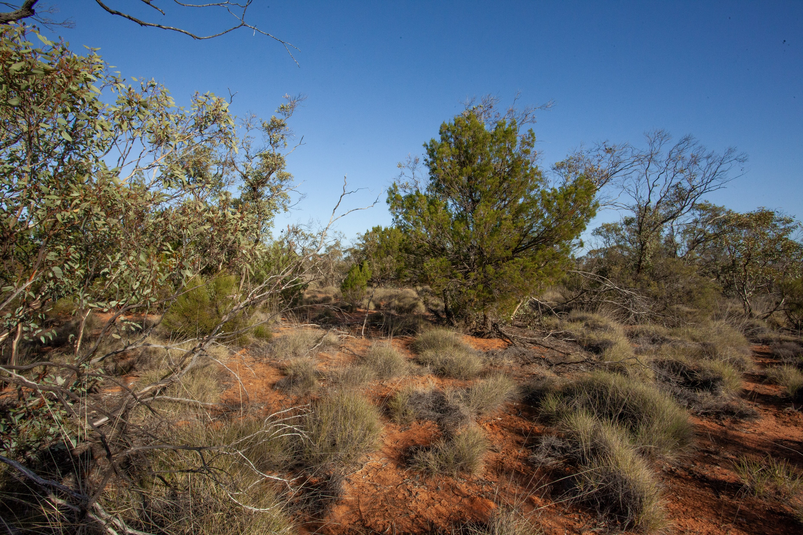

This interactive map shows vegetation condition states across the Living Landscape study region in the South Australian mallee.
The mapped condition states were developed from expert-elicited State-and-Transition Models and represent combinations of overstorey and understorey condition. States range from reference vegetation through to modified understorey, sparse or modified overstorey, and collapsed overstorey condition.
The condition-state map was derived by combining a vegetation-type map, a canopy / overstorey condition map, and an understorey condition map based on a grazing pressure index.
This map is intended as a broad-scale decision-support output and should be interpreted alongside field validation, local ecological knowledge, and the assumptions of the underlying State-and-Transition Models.
This project was supported by funding from the Australian Government’s National Environmental Science Program through the Resilient Landscapes Hub. We acknowledge the Traditional Owners of Country throughout Australia and their continuing connection to land, sea and community, and pay our respects to Elders past and present.